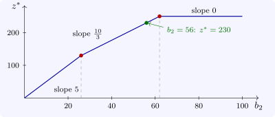

6.1 Changes in the right-hand side
Theorem 6.1.1 (Right-hand-side ranging). If \(b_i\) changes to \(b_i + \delta \), the basis \(B\) remains optimal if and only if \(x_B + \delta B^{-1}e_i \geq 0\). On that interval of \(\delta \) the optimal solution is \(x_B + \delta B^{-1}e_i\) and the optimal value is \(Z + \delta y_i\).
Proof. The reduced costs do not involve \(b\), so dual feasibility is unaffected, and \(B\) is optimal if and only if the new basic solution \(B^{-1}(b + \delta e_i)\) is non-negative. The value is \(c_B^{\mathsf T}B^{-1}(b + \delta e_i) = Z + \delta y_i\). □
Example 6.1.2. For the second resource, \(B^{-1}e_2 = (-\frac 12, -\frac 16, \frac 13)\), so the conditions are \(3 - \frac \delta 2 \geq 0\), \(8 - \frac \delta 6 \geq 0\) and \(10 + \frac \delta 3 \geq 0\), that is \(-30 \leq \delta \leq 6\): the basis stays optimal for \(26 \leq b_2 \leq 62\), and over that range each extra unit is worth \(y_2 = \frac {10}3\). Likewise \(23 \leq b_1 \leq 56\) with \(y_1 = \frac 53\), and \(b_3 \geq 2\) with \(y_3 = 0\) (Software 6.5.1). At the end \(b_2 = 62\) the slack \(s_3\) reaches \(0\); beyond it the third constraint binds, the basis changes, and the second resource is no longer worth anything.
The shadow price is thus a local value. Outside the range it changes, and the way it changes is described by the following theorem, the geometric content of sensitivity analysis.
Theorem 6.1.3. For the maximisation (P), let \(z^*(b)\) be the optimal value as a function of \(b\), over the set of \(b\) for which (P) is feasible, and suppose the dual feasible set \(\{y \geq 0 : A^{\mathsf T}y \geq c\}\) is non-empty with vertices \(y^1, \ldots , y^K\). Then \[ z^*(b) = \min _kb^{\mathsf T}y^k , \] a concave piecewise linear function of \(b\), whose slope in the direction \(e_i\) on each piece is the shadow price \(y_i\) of the corresponding optimal basis.
Proof. By strong duality \(z^*(b)\) equals the dual optimum \(\min \{b^{\mathsf T}y : A^{\mathsf T}y \geq c, y \geq 0\}\), which is finite where (P) is feasible and, by the fundamental theorem applied to the dual, is attained at a vertex. So it is the minimum of the finitely many linear functions \(b \mapsto b^{\mathsf T}y^k\), which is concave and piecewise linear. □
Concavity is diminishing returns: each additional unit of a resource is worth no more than the one before (Figure 5). The theorem also explains why shadow prices can be ambiguous at a breakpoint, where two pieces meet and the optimal basis is degenerate: there the left and right slopes differ, and a solver reports one of them.

Questions on this section
Stuck on something here? Ask below and it stays attached to this topic.